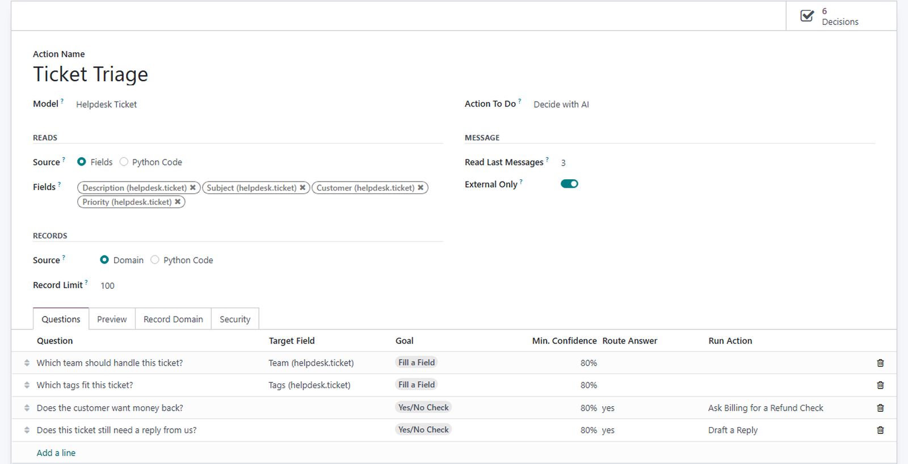
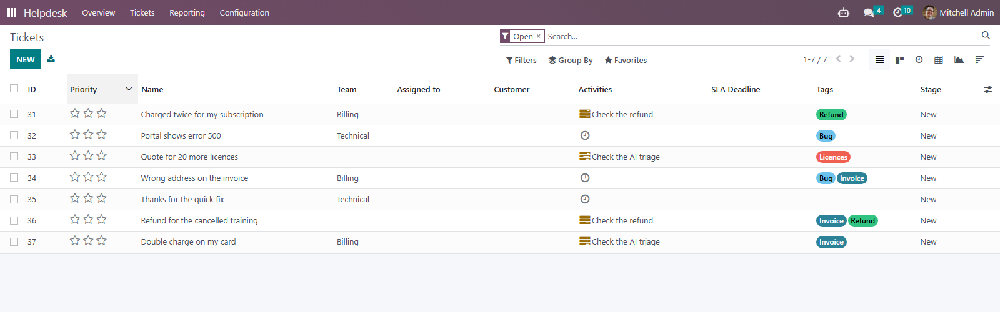
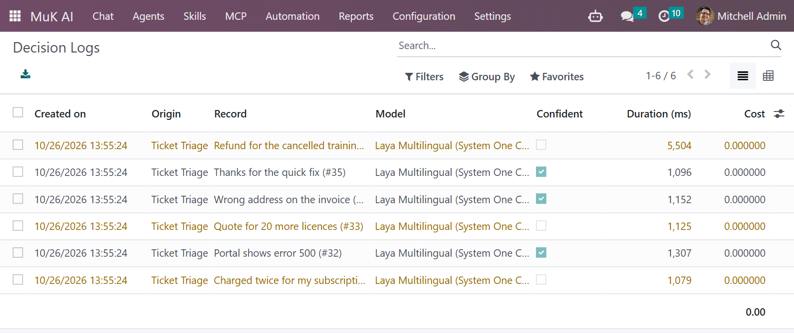
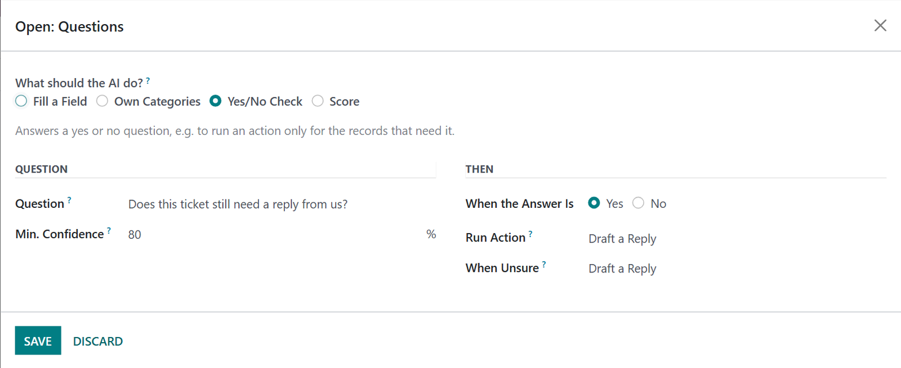
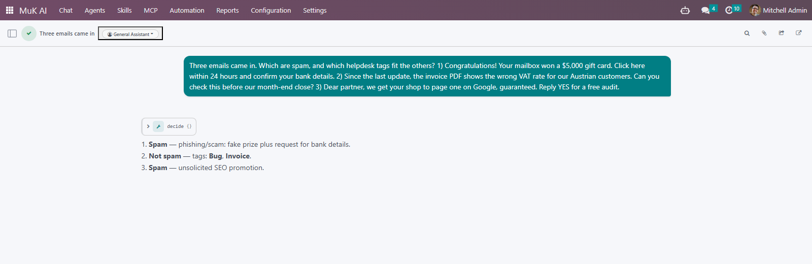

A decision model reads a ticket, a lead or any text and answers fixed questions: one choice out of a list, a score on a scale, or the chance of a yes, each with its confidence. Use it to fill fields, route records and start an AI agent only where one is needed.
A team, the tags or any selection set by a server action, from an automation rule, a schedule or a list.
Every answer carries its confidence. Below your threshold nothing is written, and a person checks the record.
A yes or no question first, so an AI agent chat starts only for the records that still need one.

Decide with AI is a server action for any model. Each question either fills a field or routes the record, and the decision model answers them all for a record in one call.
One choice out of a list, a score on a scale, or the chance of a yes, with a probability for every option.
A selection, a many2one or a tags field turns its values into the options, with one yes or no per tag.
An answer can run another action on the records that gave it, such as a refund check for the billing team.
An answer below its confidence is never written. Each question names the action that takes its unsure records over.
The preview shows the exact text the decision model reads for any record, before a single decision is paid for.
Jev in the TypeSafe cloud, Laya on your own server with Decis, or the small model of your chat provider.
Run the action from the Actions menu of a list, or put it in an automation rule that fires on creation. Every ticket gets its team and its tags the moment it arrives.
A refund request gets its check, and a ticket the model was not sure about gets a to-do instead of a guess.


Each decision is logged with the question set, the answers and their probabilities, the model that served it, the time it took, its cost, and the values it wrote.
When a record was sorted the way you did not expect, the log shows what the model saw and how sure it was.
No key and no server yet? The small model of OpenAI, Anthropic or Google answers in the same shape, and the next provider takes over when one fails.
A yes or no decision in front of an agent action asks about each record first. Only the records answered yes, or where the model is unsure, get an agent chat.
A thank-you note does not need a reply drafted, and costs a fraction of a cent instead of a chat.

An agent hands the decide tool the texts it was given, the records it names, or every record a domain selects, and gets them back grouped by answer, in one call.
Spam or not, which tags fit, which team should take it. The cost of the call counts against the budget of the chat like every other turn.

Every decision goes through the same service, so your own modules get the providers, the fallback, the log and the cost tracking for free.
decide(state, questions) on muk_ai.decision answers a choice, a score or a yes or no about any text or record.
The decide tool is open to every MuK AI agent and to MCP clients, for texts, records or a whole domain at once.
Any server speaking the System One API is a provider: a hosted model with its key, or your own with none.
What you get for free, and what has to be paid work.
Issues and merge requests are welcome on the public repository. They are read — but no response time is promised.
A question set built for your process, or a fix on a deadline, is paid work — quoted up front. Write to sale@mukit.at.
LGPL-3. Use it, change it, ship it inside your own work — no licence key, no database count.
Modules written for your process, on your Odoo version.
Odoo joined up with the systems you already run.
Hosting, deployment and upgrades you do not have to watch.
Your team taught the parts of Odoo they actually use.
An agreement, so an answer does not depend on who is free.
Odoo.sh or on-premise, Community or Enterprise, with MuK AI Assistant and MuK AI Automation. A decision server is optional: without one, a chat provider answers.
Under MuK AI › Configuration › Providers, give TypeSafe its key or Decis its address, or set a Default Decision Model on a chat provider.
Depends on muk_ai_automation. Install it like any other module; it needs no extra Python packages.
Create a decision action with its questions, then run it from the Actions menu, an automation rule or a schedule. Put a decision in front of an agent action. Read every answer in the log.
Decision actions, their questions and the log are records, and an upgrade keeps them.
MuK IT GmbH, Vienna. Author and maintainer.
Tell us where records wait for someone to sort them, and we will tell you which decision takes that over. MuK IT — Austrian Odoo partner, Vienna.